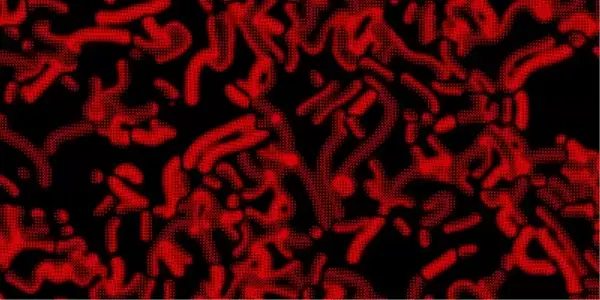

Discrete
Continuous
Game of Life
Description
Conway's Game of Life (GoL) is a zero-player game, where the evolution of the game board depends only on the state of the board. It is the best known example of a cellular automaton. To interact with the game, you can create an initial configuration and see how it evolves, pausing or stepping through the states of the board. Interestingly, the GoL is turing-complete and can simulate a universal constructor or any other turing machine.
Rules
The GoL has cells in 2 states, alive and dead. The evolution of a cell depends on its 8 neighbors. For the GoL, the below are the rules:
- A dead cell comes alive if it has exactly 3 neighbors
- A live cell survives only if it has 2 or 3 neighbors
The above rules can be represented by the rulestring B3/S23. Life-like automata are a class of automata which can be represented by such rulestring. For example, the automata "HighLife" is represented by B36/S23, where birth occurs when a cell has 3 or 6 neighbors, and survival occurs when a live cell has 2 or 3 neighbors.
Additional Info
This simulator has been modified to allow for modification of the neighborhoods for life-like automata. For automata with neighborhoods of size greater than 10, numbers in rulestrings can be wrapped in brackets [Example: B1(10)/S2(10)].
Click here for more info on rulestrings and life-like automata.
Langton's Ant

Description
Another very simple Turing-complete automata is Langton's Ant. While the grid has only 2 states, alive and dead, there are also ants walking along the grid. While the ant staying on a cell does not affect the cell's state, the ants define the rule for the automaton. Another interesting thing to note is that after a period of chaos, the ant converges on a recurrent "highway" pattern regardless of the initial configuration, displaying emergent order.
Rules
Below are the rules of Langton's Ant, defined for each ant:
- An ant at a white square flips the color of the square and turns 90 degrees clockwise
- An ant at a black square flips the color of the square and turns 90 degrees anticlockwise
- All ants take a step forward after turning
Additional Info
For more info on Langton's Ant and generalisations to more states or more complex rules (Langton's Ants can be generalised to automata known as Turmites), check out the Wikipedia Article
Elementary Automata
Description
Contrary to most other cellular automata, Elementary Cellular Automata is actually a 1-dimensional automata. You can think of the automata as black and white squares on a long piece of tape. The next state of each square is dependent on both its own state and its 3 neighbors. While you can't exactly represent a 1D automata on a 2d grid, it is possible to draw each timestep of the automata on a different row. In such a case, you can think of the state of each cell being determined by the 3 cells above it.
Rules
There a 2^3 possible permutations that the 3 neighbors can take, and each permutation can result in a black or white square in the next state, resulting in exactly 256 possible rulesets. Each rule can be represented by a number from 0 to 255: these rules are termed the Wolfram Code. Below are some rules with interesting results.
- Rule 30: Despite its simple rule, it produces highly unpredictable patterns. It has been used as a Random Number Generator.
- Rule 90: Creates a fractal pattern known as the Sierpiński triangle
- Rule 110: A turing-complete rule, capable of universal computation
- Rule 54: Generates stable structures and moving gliders, similar to the gliders in Conway's GoL
Additional Info
For a more detailed list of interesting rulesets and their properties, check out the Wikipedia Article
Brian's Brain
Description
Brian's Brain is an extension of the "Seeds" lifelike automata (B2/S) to 3 states. Because of the automaton's name, it can be linkened to a brain and each cell likened to a neuron. The 3 states of the cells are named approppriately (ready, firing, refactory). Brian's Brain displays the interesting property where small patterns tend to blow up and almost all patterns are spaceships: patterns which mvoe across the grid.
Rules
Brian's Brain has cells in 3 states, ready (neurons prepared to fire), firing (active neurons) and refactory (neurons resting after firing). The evolution of a cell, similar to life-like automata, depends on its 8 neighbors. Below are the rules:
- A ready cell fires if it has exactly 2 firing neighbors
- A firing cell always becomes refactory
- A refactory cell always becomes ready
This editor has been customized such that you can change the conditions on which a cell fires. The rulestring "2/3/4" means a cell will fire if it has 2, 3 or 4 neighbors.
Wireworld
Description
Wireworld is a 4-state cellular automata operating in a 2-d neighborhood with a Moore neighborhood (8 direct neighbors). Wireworld is especially suited for simulating digital electronic circuits as ot has been defined similarly to how a circuit behaves. Unlike conventional life-like cellular automata, the evolution of Wireworld is constrained to only onccur within wires/conductors. Given an infinite 2D plane, Wireworld is turing-complete due to its ability to make logic gates.
Rules
Wireworld has 4 states: empty, electron head, electron tail, and conductor, similar to components of a circuit. Below are its rules:
- Empty cells always stay as empty cells
- Electron heads always become electron tails
- Electron tails always become conductors
- Conductors become electron tails if they have exactly 1 or 2 electron head neighbors
Additional Info
Wireworld can make complex mechanisms such as logic gates, 8-bit multipliers and adders, clocks and even displays. A list of interesting components is also available.
Rock, Paper, Scissors

Description
Everyone knows how rock, paper, scissors works. This is just that game in cellular automata form! It's a 3-state automata where each color beats exactly one other color. It has a tendency to form spiral patterns after a few generations regardless of initial state.
Rules
Below are the rules of the automata:
- Rock (red) is converted to paper if 3 or more neighbors are paper
- Paper (Green) is converted to scissors if 3 or more neighbors are paper
- Scissors (Blue) is converted to paper if 3 or more neighbors are paper
The option to change the number of neighbors required for a cell to be beaten is provided in the settings. This automata can also be extended to 4-state and 5-state neighborhoods by adding in Lizard (light-green) and Spock (light-blue). Note that in 4-state games, it is impossible for all states to be equally powerful and this may lead to extinction of weakest color or complete domination of strongest color.
Additional Info
This automata was inspired by this video which shows how proportion of each state varies with time.
Neural Automata
Description
Neural Cellular Automata are based on neural networks, and they involve a convolution (summing up the values of neighboring cells multiplied by the weight of each cell), and then an activation (a mathematical function applied to the value of a cell calculated after convolution). Interestingly, neural CA can be trained to regenerate images even when portions of them are taken away, as seen in this Neural CA simulator.
While making such neural automata involves training on the image, we will instead use random weights and activations in an attempt to find interesting patterns. Credit to Emergent Garden on Youtube, who provided the idea for this automata.
Rules
For each timestep, each cell undergoes a convolution, and then an activation.
- First, the new value of a cell is calculated via a convolution with its neighbors. The value of each neighbor is multiplied by the neighbor's weight and then summed up to give the new value.
- Then an activation occurs, wherein a mathematical function is applied to the new value to give rise to more complex behavior. This can be functions like the identity (x maps to x) or power (x maps to x squared), or other more complex functions.
- Values lower than 0 or 1 are clipped back into the range.
Huegene
Description
Huegene is an automata modeling slow evolution by changing the hue of cells. Some models of huegene involve predator and prey, but this implementation is a simpler version I found on a reddit post.
Rules
Huegene works by keeping the value and saturation of every color constant and changing only hue. Extent of possible hue shift can be controlled via the random factor.
- For empty cells with empty neighbors, they remain empty.
- For empty cells with filled neighbors, they randomly select a neighbor, offset their hue, and become filled.
- Filled cells always keep their hue.